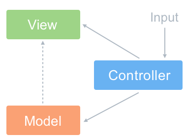
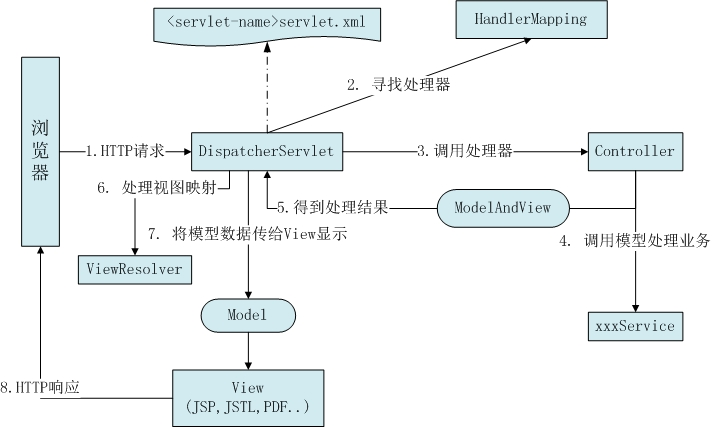
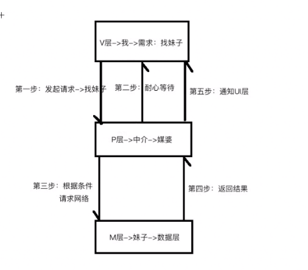

概述：
MVC,MVP,MVVM是三种常见的架构模式(Architectural Pattern)，还有MVI，MTV,它通过分离关注点来改进代码组织方式。不同于设计模式(Design Pattern),只是为了解决一类问题而总结出的抽象方法，一种架构模式往往能使用多种设计模式。
一、MVC
MVC模式是MVP,MVVM模式的基础，这两种模式更像是MVC模式的优化改良版,他们三个的MV即Model，view相同，不同的是MV之间的纽带部分。最初接触MVC模式是曾经阿汤哥手把手♂教的spring mvc，感谢一路上帮助过自己的所有人。
1.1、mvc简介

MVC是Model-View-Controller的缩写，它将应用程序划分为三个部分：
- Model: 模型（用于封装与应用程序的业务逻辑相关的数据以及对数据的处理方法）
- View: 视图（渲染页面）
- Controller: 控制器（M和V之间的连接器，用于控制应用程序的流程，及页面的业务逻辑）
MVC允许在不改变视图的情况下改变视图对用户输入的响应方式，用户对View的操作交给了Controller处理，在Controller中响应View的事件调用Model的接口对数据进行操作，一旦Model发生变化便通知相关视图进行更新。)
1.2、MVC特点
MVC模式的特点在于实现关注点分离，即应用程序中的数据模型与业务和展示逻辑解耦。在客户端web开发中，就是将模型(M-数据、操作数据)、视图(V-显示数据的HTML元素)之间实现代码分离，松散耦合，使之成为一个更容易开发、维护和测试的客户端应用程序。
- View 传送指令到 Controller ；
- Controller 完成业务逻辑后，要求 Model 改变状态 ；
- Model 将新的数据发送到 View，用户得到反馈。
1.3、MVC的两种流程
一种是通过 View 接受指令，传递给 Controller，然后对模型进行修改或者查找底层数据，最后把改动渲染在视图上。 
另一种是通过controller接受指令，传给Model：

1.4、应用
MVC模式的框架确实我认为是最多的，最开始接触的Spring MVC,然后ASP.net,Django甚至是某玖神(Orz膜玖神)的ofbiz框架都是使用MVC(虽然Django严格上是MVT模式，但是我个人觉得本质是MVC)，或者说是在MVC上改进，这里简单介绍一下spring mvc的模式。
SpringMVC简介:
springMVC框架是基于Java的实现了MVC框架模式的请求驱动类型的轻量级框架。前端控制器是DispatcherServlet接口实现类，映射处理器是HandlerMapping接口实现类，视图解析器是ViewResolver接口实现类，页面控制器是Controller接口实现类。SpringMVC的工作流程图如下：

（1）客户端请求提交到前端控制器DispatcherServlet；
（2）前端控制器DispatcherServlet查找一个或者多个映射处理器HandlerMapping，从而确定调用哪个页面控制器Controller对请求进行处理；
（3）DispatcherServlet将请求提交给Controller；
（4）Controller根据业务逻辑对请求进行处理，并返回ModelAndView；
（5）DispatcherServlet查找一个或者多个ViewResolver，得到ModelAndView指定的视图view，并将model中的数据传入视图view中进行渲染；
（6）DispatcherServlet将渲染后的视图返回响应；
由上述过程可见DispatcherServlet是Spring MVC的核心，它负责协调SpringMVC的各个组成部分对所有的Http请求进行处理，其主要工作如下：
（1）截获符合特定格式的Http请求；
（2）初始化DispatcherServlet上下文对应的WebApplicationContext，并将其与业务层、持久层的WebApplicationContext关联起来；
（3）初始化Spring MVC的各个组件，并装配到DispatcherServlet中；
其实本质上也是MVC模式的进阶版
二、MVVM

2.1、mvvm简介
MVVM与MVC最大的区别就是：它实现了View和Model的自动同步，也就是当Model的属性改变时，我们不用再自己手动操作Dom元素，来改变View的显示，而是改变属性后该属性对应View层显示会自动改变。
2.2、典型的MVVM模式的代表，Vue
刚好这两天在学习VUE,下面也是官网的一个例子
html
<div id="app-5">
<p>{{ message }}</p>
<button v-on:click="reverseMessage">逆转消息</button>
</div>js
var app5 = new Vue({
el: '#app-5',
data: {
message: 'Hello Vue.js!'
},
methods: {
reverseMessage: function () {
this.message = this.message.split('').reverse().join('')
}
}
})这里的html部分相当于View层，可以看到这里的View通过通过模板语法来声明式的将数据渲染进DOM元素，当ViewModel对Model进行更新时，通过数据绑定更新到View。
Vue实例中的data相当于Model层，而ViewModel层的核心是Vue中的双向数据绑定，即Model变化时VIew可以实时更新，View变化也能让Model发生变化。
整体看来，MVVM比MVC精简很多，不仅简化了业务与界面的依赖，还解决了数据频繁更新的问题，不用再用选择器操作DOM元素。因为在MVVM中，View不知道Model的存在，Model和ViewModel也观察不到View，这种低耦合模式提高代码的可重用性。
三、MVP
3.1、MVP简介
MVP 全称：Model-View-Presenter ；MVP 是从经典的模式 MVC 演变而来，它们的基本思想有相通的地方：Controller/Presenter 负责逻辑的处理，Model 提供数据，View 负责显示。MVP模式可应用在于APP开发，其实还有MVI也应用于安卓。
MVP的模型图
这个图也很简单，当 View 需要更新数据时，首先去找 Presenter，然后 Presenter 去找 Model 请求数据，Model 获取到数据之后通知 Presenter，Presenter 再通知 View 更新数据，这样 Model 和 View 就不会直接交互了，所有的交互都由 Presenter 进行，Presenter 充当了桥梁的角色。很显然，Presenter 必须同时持有 View 和 Model 的对象的引用，才能在它们之间进行通信。
3.2、MVP模式的核心思想
MVP把Activity中的UI逻辑抽象成View接口，把业务逻辑抽象成Presenter接口，Model类还是原来的Model。
3.3、与MVC区别
- 在MVP中，View并不直接使用Model，它们之间的通信是通过Presenter 也叫做中介(MVC中的Controller)来进行的，所有的交互都发生在Presenter内部。
- 在MVC中，View会直接从Model中读取数据而不是通过 Controller。
3.4、MVP的优点
模型与视图完全分离，我们可以修改视图而不影响模型；
◆ 可以更高效地使用模型，因为所有的交互都发生在一个地方——Presenter内部；
◆ 我们可以将一个Presenter用于多个视图，而不需要改变Presenter的逻辑。这个特性非常的有用，因为视图的变化总是比模型的变化频繁；
◆ 如果我们把逻辑放在Presenter中，那么我们就可以脱离用户接口来测试这些逻辑（单元测试）。
3.5、MVP的应用
MVP应用于APP开发，由于本人app方面经验少，所以就不讲MVP在app开发的应用。我们来讲讲MVP找女朋友
找老婆有两种方式
- 自己找
- 父母之命，媒妁之言（媒婆，中介）
当然我们都倾向于第一种方式，但是我们这里确实要讲讲第二种方式的业务逻辑
- 我要找妹子，我提出对妹子的要求（富萝莉的那种）
- 媒婆根据我的要求，找到对应满足我的要求的人
中间有三个角色与MVP各层对应的关系
- 要找妹子的我-> V层-> UI层
- 作为中介的媒婆-> P层-> Presenter
- 要找的富萝莉-> M层-> 数据层
所以媒婆（中介）会与V,M层交互，而V与M层相互没有直接交互，业务逻辑如下

自己意会吧，祝大家都能找到妹子。